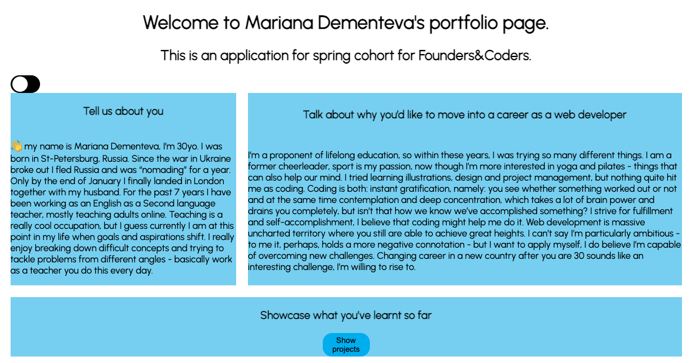

Hello, my name is Mariana Dementeva, please find the gallery of my projects down below, if you click "see desription" you can read on a bit about the process of project making. I included +2 projects outside of the scope of FAC application. Click on the name of the project to see the deployed version.
project 1 Tribute Page

project 2 Weather

project 3 Hobby page

project 4 Project Gallery

project 5 Movie Data

project 6 Website
project 7 Game